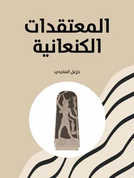

المعتقدات الكنعانية

قراءة عربية أصلية محددة النطاق في الصفحات 13 إلى 15، 17 من ملف PDF المرتبط، وليست تلخيصا كاملا للكتاب. نناقش ما تدعمه هذه المقاطع فقط.
قلب العبادة الشامية القديمة
يفتتح خزعل الماجدي كتابه بتصوير بلاد الشام القديمة بوتقة عقائد: منظومة مركبة من العقائد الأمورية والكنعانية والآرامية اختلطت أنسجتها وذابت في محيط واحد، سرعان ما أصبح حاضنًا للعقائد الوافدة الفارسية والإغريقية والرومانية، ثم رحمًا لولادة عقائد جديدة موحّدة هي اليهودية والمسيحية. ويعلن أنه سيناقش الكثير من مسلّمات التاريخ والعقائد الكنعانية ويعيد ترتيب بعضها، بل ويقلب بعضها رأسًا على عقب بتفسيرات ومخارج جديدة. يتتبع الفصل الأول تاريخ الأقوام الكنعانية الأولى من نشأتها مرورًا بفينيقيا وانتهاءً بقرطاج، ثم يحلل الفصل الثاني الميثولوجيا الكنعانية عبر شجرة أنساب شاملة للآلهة وفرضية جديدة عن الجيل الأول الأقدم منها، مع قرابة أربعين رمزًا دينيًا أعاد تخطيطه وشرح دلالته. كتاب بحثي جاد (٢٦٨ صفحة) لقارئ تاريخ الأديان والأساطير.
زاوية وحدود القراءة
قراءة موجزة من ص ١٣ إلى ص ١٥ وص ١٧ من أصل ٢٦٨ صفحة، تعرض مقدمة الكتاب ومنهجه وخطته، لا متن البحث كاملًا.
الطبعة والقراءة
هذه النسخة من الكتاب صادرة ومتاحة مجانًا بموجب اتفاق قانوني بين مؤسسة هنداوي والسيد الدكتور خزعل الماجدي.
تنزيل PDF المجاني ↓ القراءة والمصدر الرسمي ↗